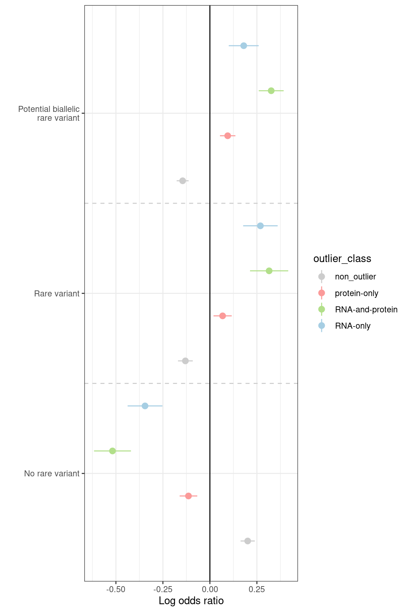
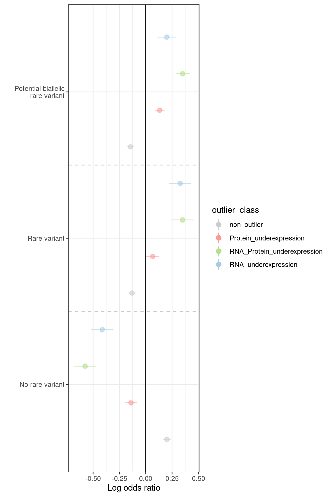

# Load plotting config and functions
source('src/config.R')
source("src/functions/Integration/integrate_annotate_omics.R")
source("src/functions/variant_enrichment.R")
# Read integrated omics file
# rp <- readRDS("/s/project/mitoMultiOmics/multiOMICs_integration/processed_data/integration/patient_omics_full.RDS") %>% as.data.table()
rp <- readRDS(snakemake@input$patient_omics) %>% as.data.table()
# Subset cases with WES and RNA-seq data avaliable
rp <- rp[WES_avaliable == T & RNA_seq_avaliable == T]
#Keep only genes, with both RNA and protein measured
rp <- rp[ gene_detected == "RNA and protein detected"]
# Filter for the genes, detected as outliers at least once
outliers <- unique(rp[outlier_class != "non_outlier"]$geneID)
rp <- rp[geneID %in% outliers]
# Add up- down- outlier class
rp <- add_up_down_class(rp,
Padj_threshold = PADJ_THRESHOLD,
Zscore_threshold = ZSCORE_THRESHOLD,
l2FC_threshold = LOG2FC_THRESHOLD)
###################################################
# Subset necessary columns
# Add variant type annotation
rp[ , var_type := "No rare variant"]
rp[ rare == T , var_type := "Rare variant"]
rp[ potential_biallelic == T , var_type := "Potential biallelic\n rare variant"]
# Subset necessary columns
rp <- rp[ , c("SAMPLE_ID", "geneID", "var_type", "outlier_class", "up_down_outlier") ]
rp <- rp[!duplicated(rp), ]
###################################################
# As soon as it is not allowed to share genetic data
# Shared data doesn't allow to reproduce original figure
# Code below was used to produse figure on the full datset
# Read variant annotation
rp <- rp[ , c("SAMPLE_ID", "geneID", "outlier_class", "up_down_outlier") ]
rp <- rp[!duplicated(rp), ]
vt <- fread("../rare_variants_pb.tsv")
rp <- rp[SAMPLE_ID %in% unique(vt$SAMPLE_ID) ]
vt <- vt[SAMPLE_ID %in% unique(rp$SAMPLE_ID) ]
vt <- vt[ geneID %in% unique(rp$geneID)]
rp <- merge(vt, rp, by = c("SAMPLE_ID", "geneID"), all.y = T )
rp[is.na(var_type), var_type := "No rare variant"]
###################################################
paste("Number of samples with WES export and RNA-seq avaliable:", uniqueN(rp$SAMPLE_ID))
## [1] "Number of samples with WES export and RNA-seq avaliable: 136"
rp[ , Ncases_per_gene := .N, by = geneID]
paste("Minimal number of individuals per gene:" , min(rp$Ncases_per_gene))
## [1] "Minimal number of individuals per gene: 63"
# Subset necessary columns
rp <- rp[ , c("SAMPLE_ID", "geneID", "var_type", "outlier_class", "up_down_outlier") ]
rp <- rp[!duplicated(rp), ]
####################
Outlier class
os <- rp[, .N, by = outlier_class]
Number of outliers per class
DT::datatable(os, caption = "Outlier counts", escape = F)
# All outliers
enr <- reshape2::dcast(data = rp, geneID + SAMPLE_ID + var_type ~ outlier_class ,
fun.aggregate = cat.agg)
enrichments <- data.frame()
for (outl in unique(rp$outlier_class)){
tem_df <- enr
setnames(tem_df, outl, "outliers")
tem_df <- tem_df[, c("geneID", "SAMPLE_ID", "outliers", "var_type" )]
feat <- unique(tem_df$var_type)
tem_df <- dcast(data = tem_df, geneID + SAMPLE_ID + outliers ~ var_type, fun.aggregate = cat.agg)
enrichment <- enrich(tem_df, outlier= "outliers" ,features= feat)
enrichment$ci_left <- enrichment$Estim - 1.96 * enrichment$Std
enrichment$ci_right <- enrichment$Estim + 1.96 * enrichment$Std
enrichment$outlier_class <- rep(outl, nrow(enrichment))
enrichments <- rbind(enrichments, enrichment)
enrichment <- NULL
enr$outliers <- NULL
}
enrichments <- as.data.table(enrichments)
enrichments[, significant := 1 ]
enrichments[enrichments$Pval >= 0.05 , significant := 0.9 ]
nodelist <- levels(enrichments$Cat)
enrichments$Cat <- factor(enrichments$Cat, levels= c("No rare variant", "Rare variant", "Potential biallelic\n rare variant"))
Outlier class
ggplot(data = enrichments, aes(x = Cat, y = Estim)) +
geom_pointrange(aes(x = Cat, ymin = ci_left, ymax = ci_right, colour = outlier_class), position = position_dodge(width = 1)) +
geom_hline(yintercept = 0) +
geom_vline(color = "gray80", linetype = "dashed", xintercept = which(nodelist=="No rare variant")-0.5) +
geom_vline(color = "gray80", linetype = "dashed", xintercept = which(nodelist=="Rare variant")-0.5) +
theme_bw() +
xlab('') +
ylab('Log odds ratio') +
scale_alpha(guide = 'none')+
scale_color_manual(values = outlier_colors)+
coord_flip(ylim = c(min(enrichments[enrichments$Pval <0.05, 'ci_left' ] , na.rm = T), max(enrichments[enrichments$Pval <0.05, "ci_right" ], na.rm = T)))

# write_tsv(enrichments, "/s/project/mitoMultiOmics/multiOMICs_integration/processed_data/variant_tables/enrichment_rare_biallelic.tsv")
write_tsv(enrichments, snakemake@output$enrichment_rare_pb)
#####################################
Up- down- regulation outliers
os <- rp[, .N, by = up_down_outlier]
Number of outliers per class
DT::datatable(os, caption = "Outlier counts", escape = F)
enr <- reshape2::dcast(data = rp, geneID + SAMPLE_ID + var_type ~ up_down_outlier ,
fun.aggregate = cat.agg)
enrichments <- data.frame()
for (outl in unique(rp$up_down_outlier)){
tem_df <- enr
setnames(tem_df, outl, "outliers")
tem_df <- tem_df[, c("geneID", "SAMPLE_ID", "outliers", "var_type" )]
feat <- unique(tem_df$var_type)
tem_df <- dcast(data = tem_df, geneID + SAMPLE_ID + outliers ~ var_type, fun.aggregate = cat.agg)
enrichment <- enrich(tem_df, outlier= "outliers" ,features= feat)
enrichment$ci_left <- enrichment$Estim - 1.96 * enrichment$Std
enrichment$ci_right <- enrichment$Estim + 1.96 * enrichment$Std
enrichment$outlier_class <- rep(outl, nrow(enrichment))
enrichments <- rbind(enrichments, enrichment)
enr$outliers <- NULL
}
enrichments <- as.data.table(enrichments)
enrichments[, significant := 1 ]
enrichments[enrichments$Pval >= 0.05 , significant := 0.9 ]
nodelist <- levels(enrichments$Cat)
enrichments$Cat <- factor(enrichments$Cat, levels= c("No rare variant", "Rare variant", "Potential biallelic\n rare variant"))
Outlier class
ggplot(data = enrichments[outlier_class %in% c("RNA_underexpression", "Protein_underexpression", "RNA_Protein_underexpression", "non_outlier")], aes(x = Cat, y = Estim)) +
geom_pointrange(aes(x = Cat, ymin = ci_left, ymax = ci_right, colour = outlier_class, alpha = significant), position = position_dodge(width = 1)) +
geom_hline(yintercept = 0) +
geom_vline(color = "gray80", linetype = "dashed", xintercept = which(nodelist=="No rare variant")-0.5) +
geom_vline(color = "gray80", linetype = "dashed", xintercept = which(nodelist=="Rare variant")-0.5) +
theme_bw() +
xlab('') +
ylab('Log odds ratio') +
scale_alpha(guide = 'none')+
scale_color_manual(values = outlier_colors)+
coord_flip(ylim = c(min(enrichments[enrichments$Pval <0.05, 'ci_left' ] , na.rm = T), max(enrichments[enrichments$Pval <0.05, "ci_right" ], na.rm = T)))

IyctLS0KIycgdGl0bGU6IEVucmljaG1lbnQgb2YgcmFyZSB2YXJpYW50cyBpbiBvdXRsaWVycyAgCiMnIGF1dGhvcjogc21pcm5vdmQKIycgd2I6CiMnICBpbnB1dDoKIycgIC0gcGF0aWVudF9vbWljczogJ2BzbSBjb25maWdbIlBST0NfREFUQSJdICsgIi9pbnRlZ3JhdGlvbi9wYXRpZW50X29taWNzX2Z1bGwuUkRTImAnCiMnICBvdXRwdXQ6CiMnICAtIGVucmljaG1lbnRfcmFyZV9wYjogJ2BzbSBjb25maWdbIlBST0NfREFUQSJdICsgIi92YXJpYW50X3RhYmxlcy9lbnJpY2htZW50X3JhcmVfYmlhbGxlbGljLnRzdiJgJwojJyBvdXRwdXQ6IAojJyAgIGh0bWxfZG9jdW1lbnQ6CiMnICAgIGNvZGVfZm9sZGluZzogaGlkZQojJyAgICBjb2RlX2Rvd25sb2FkOiBUUlVFCiMnLS0tCgojIExvYWQgcGxvdHRpbmcgY29uZmlnIGFuZCBmdW5jdGlvbnMKc291cmNlKCdzcmMvY29uZmlnLlInKQpzb3VyY2UoInNyYy9mdW5jdGlvbnMvSW50ZWdyYXRpb24vaW50ZWdyYXRlX2Fubm90YXRlX29taWNzLlIiKQpzb3VyY2UoInNyYy9mdW5jdGlvbnMvdmFyaWFudF9lbnJpY2htZW50LlIiKQoKCiMgUmVhZCBpbnRlZ3JhdGVkIG9taWNzIGZpbGUgCiMgcnAgPC0gcmVhZFJEUygiL3MvcHJvamVjdC9taXRvTXVsdGlPbWljcy9tdWx0aU9NSUNzX2ludGVncmF0aW9uL3Byb2Nlc3NlZF9kYXRhL2ludGVncmF0aW9uL3BhdGllbnRfb21pY3NfZnVsbC5SRFMiKSAlPiUgYXMuZGF0YS50YWJsZSgpCnJwIDwtIHJlYWRSRFMoc25ha2VtYWtlQGlucHV0JHBhdGllbnRfb21pY3MpICU+JSBhcy5kYXRhLnRhYmxlKCkKCiMgU3Vic2V0IGNhc2VzIHdpdGggV0VTIGFuZCBSTkEtc2VxIGRhdGEgYXZhbGlhYmxlIApycCA8LSBycFtXRVNfYXZhbGlhYmxlID09IFQgJiBSTkFfc2VxX2F2YWxpYWJsZSA9PSBUXQoKCiNLZWVwIG9ubHkgZ2VuZXMsIHdpdGggYm90aCBSTkEgYW5kIHByb3RlaW4gbWVhc3VyZWQgCnJwIDwtIHJwWyBnZW5lX2RldGVjdGVkID09ICJSTkEgYW5kIHByb3RlaW4gZGV0ZWN0ZWQiXQoKIyBGaWx0ZXIgZm9yIHRoZSBnZW5lcywgZGV0ZWN0ZWQgYXMgb3V0bGllcnMgYXQgbGVhc3Qgb25jZQpvdXRsaWVycyA8LSB1bmlxdWUocnBbb3V0bGllcl9jbGFzcyAhPSAibm9uX291dGxpZXIiXSRnZW5lSUQpCnJwIDwtIHJwW2dlbmVJRCAlaW4lIG91dGxpZXJzXQoKIyBBZGQgdXAtIGRvd24tIG91dGxpZXIgY2xhc3MKcnAgPC0gYWRkX3VwX2Rvd25fY2xhc3MocnAsIAogICAgICAgICAgICAgICAgICAgICAgICBQYWRqX3RocmVzaG9sZCA9ICBQQURKX1RIUkVTSE9MRCwKICAgICAgICAgICAgICAgICAgICAgICAgWnNjb3JlX3RocmVzaG9sZCA9IFpTQ09SRV9USFJFU0hPTEQsIAogICAgICAgICAgICAgICAgICAgICAgICBsMkZDX3RocmVzaG9sZCA9IExPRzJGQ19USFJFU0hPTEQpCgoKIyMjIyMjIyMjIyMjIyMjIyMjIyMjIyMjIyMjIyMjIyMjIyMjIyMjIyMjIyMjIyMjIyMjCiMgU3Vic2V0IG5lY2Vzc2FyeSBjb2x1bW5zCiMgQWRkIHZhcmlhbnQgdHlwZSBhbm5vdGF0aW9uCnJwWyAsIHZhcl90eXBlIDo9ICJObyByYXJlIHZhcmlhbnQiXSAKcnBbIHJhcmUgPT0gVCAsIHZhcl90eXBlIDo9ICJSYXJlIHZhcmlhbnQiXSAKcnBbIHBvdGVudGlhbF9iaWFsbGVsaWMgPT0gVCAsIHZhcl90eXBlIDo9ICJQb3RlbnRpYWwgYmlhbGxlbGljXG4gcmFyZSB2YXJpYW50Il0gCgoKIyBTdWJzZXQgbmVjZXNzYXJ5IGNvbHVtbnMKcnAgPC0gcnBbICwgYygiU0FNUExFX0lEIiwgImdlbmVJRCIsICJ2YXJfdHlwZSIsICJvdXRsaWVyX2NsYXNzIiwgInVwX2Rvd25fb3V0bGllciIpIF0KcnAgPC0gcnBbIWR1cGxpY2F0ZWQocnApLCBdCgoKIyMjIyMjIyMjIyMjIyMjIyMjIyMjIyMjIyMjIyMjIyMjIyMjIyMjIyMjIyMjIyMjIyMjCgojIEFzIHNvb24gYXMgaXQgaXMgbm90IGFsbG93ZWQgdG8gc2hhcmUgZ2VuZXRpYyBkYXRhCiMgU2hhcmVkIGRhdGEgZG9lc24ndCBhbGxvdyB0byByZXByb2R1Y2Ugb3JpZ2luYWwgZmlndXJlIAojIENvZGUgYmVsb3cgd2FzIHVzZWQgdG8gcHJvZHVzZSBmaWd1cmUgb24gdGhlIGZ1bGwgZGF0c2V0IAoKCiMgUmVhZCB2YXJpYW50IGFubm90YXRpb24gCgpycCA8LSBycFsgLCBjKCJTQU1QTEVfSUQiLCAiZ2VuZUlEIiwgICJvdXRsaWVyX2NsYXNzIiwgInVwX2Rvd25fb3V0bGllciIpIF0KcnAgPC0gcnBbIWR1cGxpY2F0ZWQocnApLCBdCgp2dCA8LSBmcmVhZCgiLi4vcmFyZV92YXJpYW50c19wYi50c3YiKQpycCA8LSBycFtTQU1QTEVfSUQgJWluJSB1bmlxdWUodnQkU0FNUExFX0lEKSBdCnZ0IDwtIHZ0W1NBTVBMRV9JRCAlaW4lIHVuaXF1ZShycCRTQU1QTEVfSUQpIF0KdnQgPC0gdnRbIGdlbmVJRCAlaW4lIHVuaXF1ZShycCRnZW5lSUQpXQoKcnAgPC0gbWVyZ2UodnQsIHJwLCBieSA9IGMoIlNBTVBMRV9JRCIsICJnZW5lSUQiKSwgYWxsLnkgPSBUICkKcnBbaXMubmEodmFyX3R5cGUpLCB2YXJfdHlwZSA6PSAiTm8gcmFyZSB2YXJpYW50Il0KCgoKIyMjIyMjIyMjIyMjIyMjIyMjIyMjIyMjIyMjIyMjIyMjIyMjIyMjIyMjIyMjIyMjIyMjCgoKCnBhc3RlKCJOdW1iZXIgb2Ygc2FtcGxlcyB3aXRoIFdFUyBleHBvcnQgYW5kIFJOQS1zZXEgYXZhbGlhYmxlOiIsIHVuaXF1ZU4ocnAkU0FNUExFX0lEKSkKcnBbICwgTmNhc2VzX3Blcl9nZW5lIDo9IC5OLCBieSA9IGdlbmVJRF0KcGFzdGUoIk1pbmltYWwgbnVtYmVyIG9mIGluZGl2aWR1YWxzIHBlciBnZW5lOiIgLCBtaW4ocnAkTmNhc2VzX3Blcl9nZW5lKSkKIyBTdWJzZXQgbmVjZXNzYXJ5IGNvbHVtbnMKcnAgPC0gcnBbICwgYygiU0FNUExFX0lEIiwgImdlbmVJRCIsICJ2YXJfdHlwZSIsICJvdXRsaWVyX2NsYXNzIiwgInVwX2Rvd25fb3V0bGllciIpIF0KcnAgPC0gcnBbIWR1cGxpY2F0ZWQocnApLCBdCgoKCgojIyMjIyMjIyMjIyMjIyMjIyMjIwoKIycgIyBPdXRsaWVyIGNsYXNzCm9zIDwtIHJwWywgLk4sIGJ5ID0gb3V0bGllcl9jbGFzc10KCiMnICMjIyBOdW1iZXIgb2Ygb3V0bGllcnMgcGVyIGNsYXNzCkRUOjpkYXRhdGFibGUob3MsIGNhcHRpb24gPSAiT3V0bGllciBjb3VudHMiLCAgIGVzY2FwZSA9IEYpCgoKIyBBbGwgb3V0bGllcnMKZW5yIDwtIHJlc2hhcGUyOjpkY2FzdChkYXRhID0gcnAsIGdlbmVJRCArICBTQU1QTEVfSUQgKyAgdmFyX3R5cGUgfiBvdXRsaWVyX2NsYXNzICwgCiAgICAgICAgICAgICAgICAgICAgICAgZnVuLmFnZ3JlZ2F0ZSA9IGNhdC5hZ2cpCgplbnJpY2htZW50cyA8LSBkYXRhLmZyYW1lKCkKZm9yIChvdXRsIGluIHVuaXF1ZShycCRvdXRsaWVyX2NsYXNzKSl7CiAgdGVtX2RmIDwtIGVucgogIHNldG5hbWVzKHRlbV9kZiwgb3V0bCwgIm91dGxpZXJzIikKICB0ZW1fZGYgPC0gdGVtX2RmWywgYygiZ2VuZUlEIiwgIlNBTVBMRV9JRCIsICJvdXRsaWVycyIsICJ2YXJfdHlwZSIgKV0KICBmZWF0IDwtIHVuaXF1ZSh0ZW1fZGYkdmFyX3R5cGUpCiAgdGVtX2RmIDwtIGRjYXN0KGRhdGEgPSB0ZW1fZGYsIGdlbmVJRCArIFNBTVBMRV9JRCAgKyBvdXRsaWVycyB+IHZhcl90eXBlLCBmdW4uYWdncmVnYXRlID0gY2F0LmFnZykgCiAgZW5yaWNobWVudCA8LSBlbnJpY2godGVtX2RmLCBvdXRsaWVyPSAib3V0bGllcnMiICxmZWF0dXJlcz0gZmVhdCkKICBlbnJpY2htZW50JGNpX2xlZnQgPC0gZW5yaWNobWVudCRFc3RpbSAtIDEuOTYgKiBlbnJpY2htZW50JFN0ZAogIGVucmljaG1lbnQkY2lfcmlnaHQgPC0gZW5yaWNobWVudCRFc3RpbSArIDEuOTYgKiBlbnJpY2htZW50JFN0ZAogIGVucmljaG1lbnQkb3V0bGllcl9jbGFzcyA8LSByZXAob3V0bCwgbnJvdyhlbnJpY2htZW50KSkKICBlbnJpY2htZW50cyA8LSByYmluZChlbnJpY2htZW50cywgZW5yaWNobWVudCkKICBlbnJpY2htZW50IDwtIE5VTEwKICBlbnIkb3V0bGllcnMgPC0gTlVMTAp9CgplbnJpY2htZW50cyA8LSBhcy5kYXRhLnRhYmxlKGVucmljaG1lbnRzKQplbnJpY2htZW50c1ssIHNpZ25pZmljYW50IDo9IDEgXQplbnJpY2htZW50c1tlbnJpY2htZW50cyRQdmFsID49IDAuMDUgLCBzaWduaWZpY2FudCA6PSAwLjkgXQpub2RlbGlzdCA8LSBsZXZlbHMoZW5yaWNobWVudHMkQ2F0KQplbnJpY2htZW50cyRDYXQgPC0gZmFjdG9yKGVucmljaG1lbnRzJENhdCwgbGV2ZWxzPSBjKCJObyByYXJlIHZhcmlhbnQiLCAiUmFyZSB2YXJpYW50IiwgIlBvdGVudGlhbCBiaWFsbGVsaWNcbiByYXJlIHZhcmlhbnQiKSkKCgojJyAjIyBPdXRsaWVyIGNsYXNzCiMrIGZpZy53aWR0aD02LCBmaWcuaGVpZ2h0PTkKZ2dwbG90KGRhdGEgPSBlbnJpY2htZW50cywgYWVzKHggPSBDYXQsIHkgPSBFc3RpbSkpICsKICBnZW9tX3BvaW50cmFuZ2UoYWVzKHggPSBDYXQsIHltaW4gPSBjaV9sZWZ0LCB5bWF4ID0gY2lfcmlnaHQsIGNvbG91ciA9IG91dGxpZXJfY2xhc3MpLCBwb3NpdGlvbiA9IHBvc2l0aW9uX2RvZGdlKHdpZHRoID0gMSkpICsKICBnZW9tX2hsaW5lKHlpbnRlcmNlcHQgPSAwKSArCiAgZ2VvbV92bGluZShjb2xvciA9ICJncmF5ODAiLCBsaW5ldHlwZSA9ICJkYXNoZWQiLCB4aW50ZXJjZXB0ID0gd2hpY2gobm9kZWxpc3Q9PSJObyByYXJlIHZhcmlhbnQiKS0wLjUpICsKICBnZW9tX3ZsaW5lKGNvbG9yID0gImdyYXk4MCIsIGxpbmV0eXBlID0gImRhc2hlZCIsIHhpbnRlcmNlcHQgPSB3aGljaChub2RlbGlzdD09IlJhcmUgdmFyaWFudCIpLTAuNSkgKwogIHRoZW1lX2J3KCkgKyAKICB4bGFiKCcnKSArIAogIHlsYWIoJ0xvZyBvZGRzIHJhdGlvJykgICsgCiAgc2NhbGVfYWxwaGEoZ3VpZGUgPSAnbm9uZScpKwogIHNjYWxlX2NvbG9yX21hbnVhbCh2YWx1ZXMgPSBvdXRsaWVyX2NvbG9ycykrIAogIGNvb3JkX2ZsaXAoeWxpbSA9IGMobWluKGVucmljaG1lbnRzW2VucmljaG1lbnRzJFB2YWwgPDAuMDUsICdjaV9sZWZ0JyBdICwgbmEucm0gPSBUKSwgIG1heChlbnJpY2htZW50c1tlbnJpY2htZW50cyRQdmFsIDwwLjA1LCAiY2lfcmlnaHQiIF0sIG5hLnJtID0gVCkpKSAKCgojIHdyaXRlX3RzdihlbnJpY2htZW50cywgIi9zL3Byb2plY3QvbWl0b011bHRpT21pY3MvbXVsdGlPTUlDc19pbnRlZ3JhdGlvbi9wcm9jZXNzZWRfZGF0YS92YXJpYW50X3RhYmxlcy9lbnJpY2htZW50X3JhcmVfYmlhbGxlbGljLnRzdiIpCndyaXRlX3RzdihlbnJpY2htZW50cywgIHNuYWtlbWFrZUBvdXRwdXQkZW5yaWNobWVudF9yYXJlX3BiKQoKCiMjIyMjIyMjIyMjIyMjIyMjIyMjIyMjIyMjIyMjIyMjIyMjIyMKIycgIyBVcC0gZG93bi0gcmVndWxhdGlvbiBvdXRsaWVycwpvcyA8LSBycFssIC5OLCBieSA9IHVwX2Rvd25fb3V0bGllcl0KCgojJyAjIyMgTnVtYmVyIG9mIG91dGxpZXJzIHBlciBjbGFzcwpEVDo6ZGF0YXRhYmxlKG9zLCBjYXB0aW9uID0gIk91dGxpZXIgY291bnRzIiwgICBlc2NhcGUgPSBGKQoKZW5yIDwtIHJlc2hhcGUyOjpkY2FzdChkYXRhID0gcnAsIGdlbmVJRCArICBTQU1QTEVfSUQgKyAgdmFyX3R5cGUgfiB1cF9kb3duX291dGxpZXIgLCAKICAgICAgICAgICAgICAgICAgICAgICBmdW4uYWdncmVnYXRlID0gY2F0LmFnZykKCmVucmljaG1lbnRzIDwtIGRhdGEuZnJhbWUoKQpmb3IgKG91dGwgaW4gdW5pcXVlKHJwJHVwX2Rvd25fb3V0bGllcikpewogIHRlbV9kZiA8LSBlbnIKICBzZXRuYW1lcyh0ZW1fZGYsIG91dGwsICJvdXRsaWVycyIpCiAgdGVtX2RmIDwtIHRlbV9kZlssIGMoImdlbmVJRCIsICJTQU1QTEVfSUQiLCAib3V0bGllcnMiLCAidmFyX3R5cGUiICldCiAgZmVhdCA8LSB1bmlxdWUodGVtX2RmJHZhcl90eXBlKQogIHRlbV9kZiA8LSBkY2FzdChkYXRhID0gdGVtX2RmLCBnZW5lSUQgKyBTQU1QTEVfSUQgICsgb3V0bGllcnMgfiB2YXJfdHlwZSwgZnVuLmFnZ3JlZ2F0ZSA9IGNhdC5hZ2cpIAogIGVucmljaG1lbnQgPC0gZW5yaWNoKHRlbV9kZiwgb3V0bGllcj0gIm91dGxpZXJzIiAsZmVhdHVyZXM9IGZlYXQpCiAgZW5yaWNobWVudCRjaV9sZWZ0IDwtIGVucmljaG1lbnQkRXN0aW0gLSAxLjk2ICogZW5yaWNobWVudCRTdGQKICBlbnJpY2htZW50JGNpX3JpZ2h0IDwtIGVucmljaG1lbnQkRXN0aW0gKyAxLjk2ICogZW5yaWNobWVudCRTdGQKICBlbnJpY2htZW50JG91dGxpZXJfY2xhc3MgPC0gcmVwKG91dGwsIG5yb3coZW5yaWNobWVudCkpCiAgZW5yaWNobWVudHMgPC0gcmJpbmQoZW5yaWNobWVudHMsIGVucmljaG1lbnQpCiAgZW5yJG91dGxpZXJzIDwtIE5VTEwKfQoKZW5yaWNobWVudHMgPC0gYXMuZGF0YS50YWJsZShlbnJpY2htZW50cykKZW5yaWNobWVudHNbLCBzaWduaWZpY2FudCA6PSAxIF0KZW5yaWNobWVudHNbZW5yaWNobWVudHMkUHZhbCA+PSAwLjA1ICwgc2lnbmlmaWNhbnQgOj0gMC45IF0Kbm9kZWxpc3QgPC0gbGV2ZWxzKGVucmljaG1lbnRzJENhdCkKZW5yaWNobWVudHMkQ2F0IDwtIGZhY3RvcihlbnJpY2htZW50cyRDYXQsIGxldmVscz0gYygiTm8gcmFyZSB2YXJpYW50IiwgIlJhcmUgdmFyaWFudCIsICJQb3RlbnRpYWwgYmlhbGxlbGljXG4gcmFyZSB2YXJpYW50IikpCgoKIycgIyMgT3V0bGllciBjbGFzcwojKyBmaWcud2lkdGg9NiwgZmlnLmhlaWdodD05CmdncGxvdChkYXRhID0gZW5yaWNobWVudHNbb3V0bGllcl9jbGFzcyAlaW4lIGMoIlJOQV91bmRlcmV4cHJlc3Npb24iLCAiUHJvdGVpbl91bmRlcmV4cHJlc3Npb24iLCAiUk5BX1Byb3RlaW5fdW5kZXJleHByZXNzaW9uIiwgIm5vbl9vdXRsaWVyIildLCBhZXMoeCA9IENhdCwgeSA9IEVzdGltKSkgKwogIGdlb21fcG9pbnRyYW5nZShhZXMoeCA9IENhdCwgeW1pbiA9IGNpX2xlZnQsIHltYXggPSBjaV9yaWdodCwgY29sb3VyID0gb3V0bGllcl9jbGFzcywgYWxwaGEgPSBzaWduaWZpY2FudCksIHBvc2l0aW9uID0gcG9zaXRpb25fZG9kZ2Uod2lkdGggPSAxKSkgKwogIGdlb21faGxpbmUoeWludGVyY2VwdCA9IDApICsKICBnZW9tX3ZsaW5lKGNvbG9yID0gImdyYXk4MCIsIGxpbmV0eXBlID0gImRhc2hlZCIsIHhpbnRlcmNlcHQgPSB3aGljaChub2RlbGlzdD09Ik5vIHJhcmUgdmFyaWFudCIpLTAuNSkgKwogIGdlb21fdmxpbmUoY29sb3IgPSAiZ3JheTgwIiwgbGluZXR5cGUgPSAiZGFzaGVkIiwgeGludGVyY2VwdCA9IHdoaWNoKG5vZGVsaXN0PT0iUmFyZSB2YXJpYW50IiktMC41KSArCiAgdGhlbWVfYncoKSArIAogIHhsYWIoJycpICsgCiAgeWxhYignTG9nIG9kZHMgcmF0aW8nKSAgKyAKICBzY2FsZV9hbHBoYShndWlkZSA9ICdub25lJykrCiAgc2NhbGVfY29sb3JfbWFudWFsKHZhbHVlcyA9IG91dGxpZXJfY29sb3JzKSsgCiAgY29vcmRfZmxpcCh5bGltID0gYyhtaW4oZW5yaWNobWVudHNbZW5yaWNobWVudHMkUHZhbCA8MC4wNSwgJ2NpX2xlZnQnIF0gLCBuYS5ybSA9IFQpLCAgbWF4KGVucmljaG1lbnRzW2VucmljaG1lbnRzJFB2YWwgPDAuMDUsICJjaV9yaWdodCIgXSwgbmEucm0gPSBUKSkpIAoK